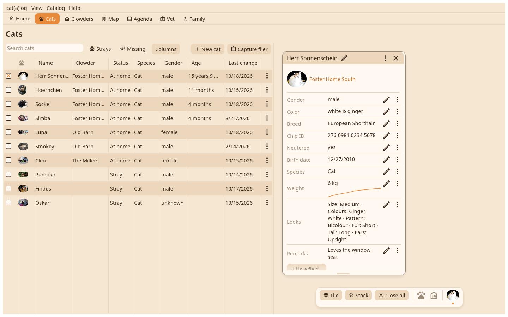
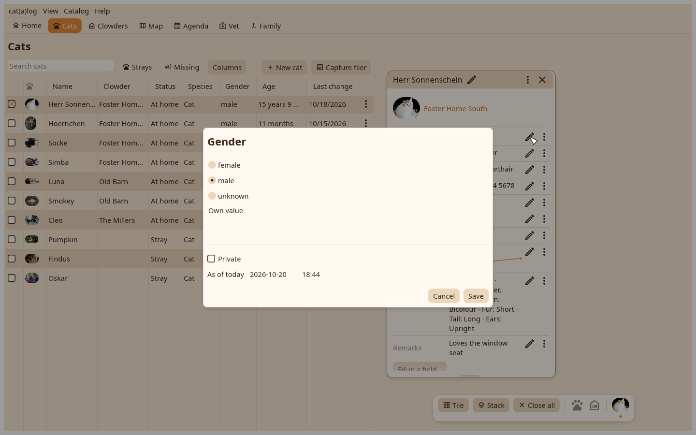

1. The card
A cat's card with its fields. Every row has a pen and a ⋮.

2. The editor
The pen opens the field's editor as a dialog: the value in your units, the date it counts from, the private mark, Save on the right. The card shows the new value and the history keeps the old.
